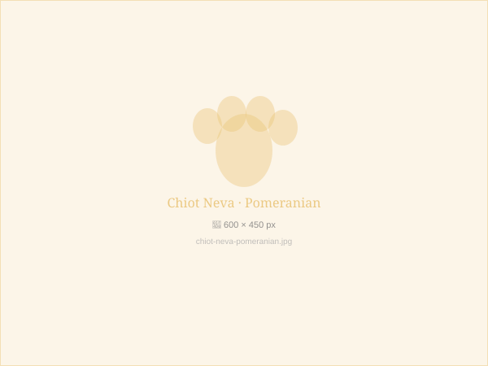

Disponible
Luna
- Robe argent et blanc, yeux bicolores
- Vaccins DHPPiL, puce CH, vermifugée
- Pedigree FCI · Parents testés
- Disponible immédiatement
CHF 2'900
Réserver Luna →

Disponible
Storm
- Robe gris charcoal et blanc, yeux bleus
- Vaccins DHPPiL, puce CH, vermifugé
- Pedigree FCI · Parents testés
- Disponible immédiatement
CHF 2'800
Réserver Storm →

Réservée
Neva
- Robe orange sable, yeux ambrés
- Vaccins DHPPiL, puce CH, vermifugée
- Pedigree FCI · Lignée championne
CHF 2'500
Liste d'attente

Disponible
Arctic
- Robe noir et blanc, yeux bleus glace
- Vaccins DHPPiL, puce CH, vermifugé
- Pedigree FCI · Père champion Suisse
- Disponible mi-mars 2025
CHF 2'200
Réserver Arctic →

Réservée
Cannelle
- Robe crème vanille, très rare
- Vaccins DHPPiL, puce CH, vermifugée
- Pedigree FCI
CHF 2'800
Liste d'attente

Disponible
Blizzard
- Robe blanche pure, yeux bleu ciel
- Vaccins DHPPiL, puce CH, vermifugé
- Pedigree FCI · Taille adulte ~8kg
- Idéal appartement
CHF 3'100
Réserver Blizzard →
Vous ne trouvez pas votre futur compagnon ?
Inscrivez-vous sur notre liste d'attente — nous vous contactons en priorité dès qu'un chiot correspondant à vos critères est disponible.